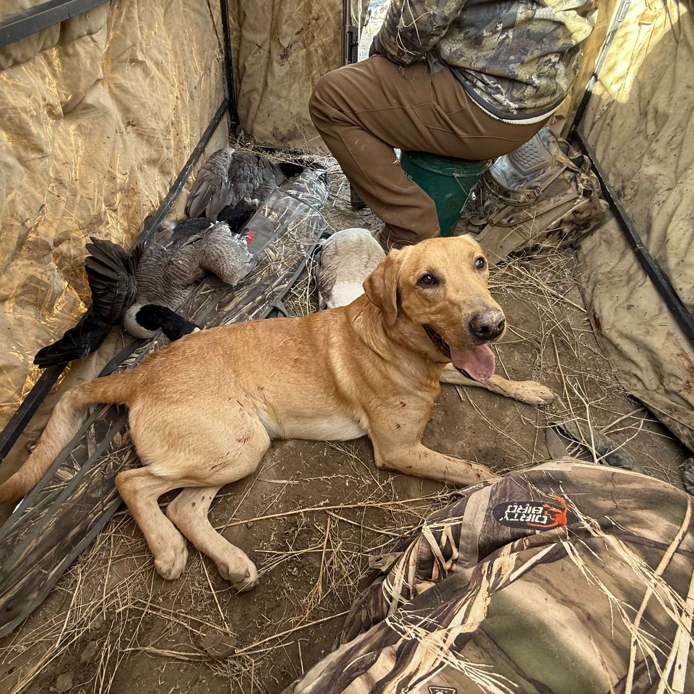

Episode 63 · October 06, 2026 · 59:54
Why Good Dogs Fall Apart on Opening Morning

About This Episode
Questions about the training topics in this episode? Tyce works with bird dog owners and hunters through Utah Bird Dog Training. Reach out to work with him directly.
Resources & Links
- The Gunshy Fix — Sound conditioning program for gunshy dogs.
- Kuranda Dog Beds — Elevated, chew-proof dog beds built for working dogs.
- Gunner — Crash-tested kennels, bumpers, and gear for working dogs.
- NuVet — Cold-pressed supplements for optimal dog health.
- All American Canine — Made-in-the-USA treats and supplements for working dogs. Promo code: UTAHBIRDDOG.
- Paradigm Sporting Dog — Veterinarian-designed first aid kits for bird dogs.
- Utah Bird Dog Training — Tyce's professional training services.
- Field Bred Golden Retrievers — Tyce and Rachel's golden retriever breeding program.
- Utah Pointing Labs — Tyce's pointing lab breeding program.
Transcript
Full transcript for Episode 63: Why Good Dogs Fall Apart on Opening Morning.
Tyce
Hey everyone, welcome to The Bird Dog Podcast. My name is Tyce Erickson. I will be the host today on this show. Thanks for tuning in. If you guys are new to listening in this podcast, we talk about everything bird dogs. So it's we talk about products. We talk about dog training, talk about things in the bird dog world. So appreciate you guys listening, a little background about me. I've been training gun dogs for the last 20 years or so. And to do it day in and day out, I literally walked in from just training a couple of golden retrievers and working on force fetch with one, working on steadiness with another one, gun introduction. And just, that's what we do a day in and day out. So I'm really passionate about dogs. I've been passionate about animals and dogs ever since I was a little kid. And I think it's amazing that you can take an animal and teach them to do something for you. I also on the side, I have pack llamas, and that's kind of in that same realm. It's fun to take an animal, teach it how to work, teach it to do what you're asking it to do, and then take essentially a wild animal that was caught in the mountains like a llama from, you know, South America and brought. You know, into the United States and then take that animal, you know, it's obviously ancestors were caught, at some point and domesticated, but then you take them back into the mountains and have panniers on them. You're packing, you're hunting with them and putting your animals on them. And it's just cool to me. So dogs are the same way. It's cool to take an animal, a puppy that knows nothing and utilize those genetics and train methods to get that dog to go find birds for you, point birds for you, retrieve birds for you, you know, whatever the game is that you're wanting to play with your dog. So I'm going to share tips with you and training techniques and things that I learn. And today, we're actually going to talk about a really important topic. Our duck hunt season just opened up this last weekend. And there's some important things to talk about with opening day of duck hunting. In the meantime, If you guys can help us out, help support the show, you know this does take time to edit these things and get them out and get guests on and share this knowledge with you guys and pay for hosting fees and I know I hear people say that but it does it does add up time and money wise so if you guys Want to keep hearing these podcasts? That's ultimately up to you. If you guys like listening to these, you know, help us out in any way you can. If you're shopping for a dog cot, check out Kuranda dog cots. Check out our show links. If you use any of these businesses and use our link specifically, it helps us out. So I just picked up today five more. Cots that actually go into my dog crates. And so a lot of my crates, I'll put, like, pine shavings in them, but those get kicked out. And, you know, if I have a dog that comes in, like, a doodle of some sort to just do obedience training, or a curly-coated dog, like a boykin, or whatever it may be, you know, you put them in shavings, and they're kind of like velcro. Those shavings just tend to stick to the fur of the animal and I'm so bad. put these Kuranda cots. I've actually had them in my dog runs but I ordered some that were small enough to fit inside my aluminum crate. So I'm excited to have those in there. We can just pull them out, spray them down really easy and dogs with, you know, those curly coats that tend to attract different material. That's not going to happen. So I'm excited to get them and put them to more work. But they're the best cot that I have found on the market. If you find something better, it's going to hold up stronger, tougher. Please let me know. But again, these products I am sharing with you, I have used them. So I'm not saying these just, you know, it is, they're cool or, or people think they're cool, whatever. These are ones we've actually put to the test. So eventually if you have a really, you know, depending on your dog, sometimes they can't wear it through the cot. Pads. But, I mean, we're using these day in and day out, and I replace one every once in a while, but they're super easy to replace. You take the corner screws out, pop, pop, pop. You slide a new one out, build one out, slide a new one in, and you're good to go. Get the anodized aluminum. I don't mess around with plastic. They have some PVC pipe leg ones. I don't use those. Dogs seem like they could chew those up. I haven't even tried them. So just go straight to aluminum and your dog's not going to be able to chew through those. So I've never had a dog chew through them and we've had hard dogs on them. So the next thing you check out is All American Canine. All American Canine, they make some really good stuff. If you're looking for a natural treat for your dog. Try them out. They have freeze-dried. parts so they have like necks and heads and liver and feet. And they would, I don't know, you don't know how they'd respond, but all my dogs really do like them. I've never had one of their treats that they didn't like, and they're all natural, they're freeze-dried so they break apart easy. I've never had any like bones splinters or anything like Duck parts, so they have like necks and heads and liver and Don't ever overdo it with treats on a dog. If you do overdo it sometimes, sometimes with treats, you can cause dogs to have diarrhea. So I'll give them like one of them, you know, as a treat, like, or if you want to get your dog a little nutrients before they go out hunting, give them one or two of those. Get some fuel in their body. And that's a good way to use them also. Also, they have a weight gainer that's 70% protein. I have a golden retriever. He's always just run lean. He's completely healthy. He just doesn't have a big appetite. He does, I'm going to put the weight gainer on him just to get some weight on him for waterfowl season. When it gets cold, I like my labs, they're my goldens, my retrievers in general, about five pounds overweight. It just gives them a little extra insulation if they're a duck dog. So I'm trying to get a little weight gain, put some weight on them, so I'm using the weight gainer. So if you have a dog that's struggling with weight issues. I give it a try, All American Canine, the link is in the show notes, and then if you're looking for a crate, check out gunner.com, they're awesome. Their link is also in the show note, click on that and pick yourself up a Gunner crate. It's kind of a buy one, cry once those crates, you know, they're not cheap, but you know, ideally, honestly, that crate should last your whole lifetime. So For sure, it should last your dog's lifetime. It should last really, it should be like one of those last items that you buy and don't have to worry about it anymore, so check out Gunner and check out any of the other businesses in our show notes. We support them and we're grateful for the good products that they make. All right, let's jump into the show. And this topic today and this the topic I wanted to talk about was should you take your dog on opening day of waterfowl season? That's the question. Should you take your dog? Now I'm going to address if it's a seasoned dog, absolutely you should take your dog if it knows what's going on, and it's seasoned. Take your dog because there's not going to be really makeups and surprises. Now, being a trainer, what we see a lot of times is people get excited. They get their dog trained, they spend time, money, or they're training it themselves and they take it out on the opener. As you guys all know, if it's any, well, if you're a duck hunter and you go out here in Utah, the marsh is full of people. I'm sure it's the same way. Anywhere you go on public ground, there's a lot of people, there's going to be a lot of gunfire, there's going to be a lot of commotion with birds not knowing where to go. They're flying everywhere looking for a safe spot. And that's what makes opening fun. It's when that first crack goes off, you're like, yes, the season is here. And then bang, and then bang, bang, bang, bang, and it just sounds like World War II. World War III, we're not World War III yet, just a lot of gunfire going off and it's awesome. Birds start piling in and it's just starting to get light, someone shoots like a half hour early and then everyone else just joins. Not the legal way, but that's it seems like there, there's always that one guy in it. Starts it off a little early and then everyone just starts, what the heck, and then they just start work. So,, but that being said, opening day is so fun. It's so exciting. There's birds gone everywhere. There's a lot of shooting going on and it's not the best place for a young dog. I'm just gonna say that, put that out there. The chances of having a negative experience with the dog on its first hunt, opening morning, is probably going to be negative. So, example, I just had a dog go home about a week ago and dog is a great dog. He has great desire, great drive and the owner took him out on gonna be negative. So, example, hunt. And I said, well, you should take the dog out in your boat because we hadn't done any boat work with it. The lake is really low. And I said, just take him out on your boat, put some decoys out, work them off the boat, do some shooting, kind of pattern him to how your hunting style is going to be. And so he said that's kind of what he did. So that's good. So, okay, so hopefully the dog's not. The bow isn't completely foreign to him when he takes them out, right? So we're trying to just get the dog comfortable going from training to the real hunting scenario. Now everyone's hunting spread, hunting location, hunting decoys, they're everything. The amount of people that go is different. It's different, right? You may be hunting with yourself. You may be hunting with... Six I would say on average a lot of people will be hunting a minimum of two people, most likely probably two to four people in their group. And these guys have four people in their group. So the dog, the hunting starts going off, gunshots start going on, boom, boom, boom, boom. And the dog is in his crate, he's in a blind, I think it was off to the edge of the boat and he was just curled up in there. Didn't know what's going on. The guy sent him on his name, trying to get him out of the crate. and the dog just didn't go. So, you know, of course, as a handler, you're like, how frustrated, you're like, man, he should just do his thing, he should be looking around, looking at birds, because this dog in training, Didn't know what's going on. The guy sent him on his name trying to prep it for the experience that they're going to encounter. But the dog's in his crate, he's curled up, not really into it. Guy yells at him, starts correcting him with the collar, get out of here, you know, trying to get him to go on his name, you know, correct him with the e-collar. The dog's just not having a positive experience. He did say he did get out on a second bird and picked up the bird and actually brought it in, but then went back and jumped into his crate, which is that's, that's common. We'll talk, we're going to break. We're going to talk about what happened and then we're going to break it down. And how to avoid these circumstances or how to work your dog through this. So shooting six birds, not, it was kind of a slower hunt, but I'm sure to shoot six birds. It still took some shots, but the dog did go out, didn't see the bird, but he ran out, kind of looked around the decoys, told him to hunt them up. Dog did find the bird, picked it up, small. There's a small wind, right? They shoot another bird down. The guy tries to send the dog. And the dog runs out, or I don't even know if he gets out. So he jumps out into the, decoys, kind of calls the dog out of the, out of the, out of the hunting stand. This is a win. It's a, good idea. Get your dog out. And he walks into the bird saying, hunt him up. The dog just standing at his side. And the dog, he walks him right up to the bird and the dog is not. And then he's like, fetch, you're going to pick it. So he starts correcting the dog with the e-collar. Hey, like fetch, pick that bird up. And the dog doesn't want to pick it up. First of all, I try to see the bird there and who knows, none of us were there, right? But maybe you didn't see the birds who starts correcting the collar. The dog's now having a little bit of a negative experience, probably wants to go back in his blinds. The You know, tells the dog to get back in his blind, he's obviously frustrated, which is, which I get it, I would be frustrated too. So gets back in his blind and then they keep hunting and I think... You know, hunting dies down and that's kind of the end of the day. So dog didn't really do a whole lot. Now, we take this dog back when he did the handoff. We're throwing ducks from concealed locations, shooting right over it. The dog is running out there with a ton of style, a ton of beauty, a ton of enthusiasm, loving it, doing water work. The dog is jumping off the bank, flying into the water, for achieving. Bumpers, ducks, whatever, he's bringing them beautifully to the stand. Actually, not a stand, we worked him out of his blind. So we're working the dog actually out of the his hunting blind on the stand. The dog is doing great, sticking his head out, looking around, shooting, sending him out there. He's bringing the dog to him, delivering the bird, putting him back in the hunting blind and this dog is looking great. And so you think out, okay, why was the dog acting this way? And we worked the dog on the marsh, we worked it in the field, we worked it in many different places. Where was the breakdown from the training to the hunting? Okay, let's break it down. One, the dog was not trained in the dark. And as you all know, when you go out on opening morning, it is dark. You're taking the dog on a boat ride. in the dark. The dog does, is not used to that. He's never been out in the dark on a boat. Step one, that's a lot of that's newness right sound of the motor a lot of people they maybe don't know two or three people in the boat gear they're throwing around he's lifting the dog may put in the boat whatever that's new. Okay, so the dog's not new to that the dog all sudden is in the water as you're setting up decoys you can't see it's dark Just like us, imagine if you're out there in the dark, you don't have a headlamp, you really can't see, you're in the cold water, and all of a sudden, kind of the owner shows you where the blind is, and maybe if the owner wasn't patient, not saying the owner did this or not, you tell him "Kennel," jumps up into his blind, and then he's like, oh, I'm out of the water. Okay. That was cold. I was just standing in that water for a little bit as we're getting decoys set up. Now he's out of the water. He's kind of in his little cave there in the blind. He's not really sticking his head out because he's thinking more about, man, that boat ride was a little overwhelming. The water was cold and all of a sudden, boom, and gunshots started going off like crazy. You know, ideally, I think the dog looks out, what is that? Where is that? No, the dogs like whoa, like I'm in here, I can't see anything and he's already overwhelmed, the gun shots start going, shots start going off, and also the owner's yelling his name, he's not marking the birds. So the dog's just like, I'll just sit here, I don't really know what's going on. You know, even though I hear my name, that I should make a retrieve, it's not tied into anything, he's not tied into anything, he's not tied into anything, he's not tied into anything, he's not tied into anything, he's not tied into anything, he's not tied into anything, so you're trying to send him, and then the owner... There's a good chance the owner may correct the dog, give the dog a zap, and then yell the dog's He's like Like, what? Like fetch what? You know? And maybe they start cracking with the e-collar like, hey, fetch, pick it up. And the dog just, it's, it's overwhelmed. It's too much. You have, the gap is too big. You go have a dog that's beautiful and building into a nice training dog. And now you're having this dog that's out there acting like he's never, he doesn't know what the heck he's doing, right? So then you get the dog, then the dog's like, well, I'm a little overwhelmed. So he, all of a sudden he sees a bird. Oh, there's bird he picks it up And then he's like, well, I don't really know where to go. I've been safe inside my blind. So he runs back and jumps in the blind. Well, he has the bird in his mouth. So he jumps in there and then the owner's like, hey, fetch, get that out of that blind, pick it up, deliver it a hand. Well, the dog can't really turn around and then he's zapping him now to like And then he's like, well, I don't really know where to go. Because the, owner's frustrated at this point because people are shooting like crazy and you're trying to hide and you're trying to work the dog and birds are still coming in. It's just mad chaos, right? Like you're not being patient with your dog, you're shooting birds and other people and you're standing out maybe in the decoys trying to get your dog to work and it's just, it's chaos and your dog is going to, your dog is going to struggle if it's a young dog. Most likely, okay? So, dog ends up, you know, jumping back in the blind, whatever, he grabs the bird out of the blind, frustrated, you know, you shoot some more birds, and then at the end, the mouse dies down, and the dog's kind of like, oh, okay, I'll just stay in here safe. I don't know if I was just chaos, I'm cold a little bit. This is kind of my... Go to my bedroom, get out of it, situation And,, ends. Okay. That's not what you want. Okay. I'm just gonna throw that out there. That is not what you want. And so when I talk to my clients, and I'm pretty sure I told this to this client, and if you're listening, I'm just painting this so we can all learn what the correct way to break in a new hunting dog. Now this dog, it's going to be okay. There's nothing really at this point. The bat owner Can really do to screw up this dog to fix it. We can fix it and the dog will probably self-correct on its own through some a little bit of positive experience because we built into that dog's brain way more positive experiences than negative experiences. Okay, so the dog is he knows the game is confident but he's going to need to be warmed up a little bit and I got on the phone and I Talked to the owner, said, I asked him how to go. Oh, blah, blah, blah. He told me what happened and then we jumped on the phone and kind of walked through it and I just said, why? Why that you saw when I was going home, had drive desire, loved it, and now is not, okay? It's too much. You're trying to get to A to Z. You didn't do baby steps enough, right? From where the dog was in training to where it's at. Now, if you had taken the dog out on a boat ride in the dark, driven around a couple times, when it was just start getting the light, you set out some decoys and you shot multiple shots. And it was only you, and you threw a bumper, or you threw a dead duck out there, and you released the dog out there to go and get it. And if the dog struggled, you had fun with it. So I'm kind of getting ahead of myself. Let's talk about, one, I'm going to talk about why not, why I would not recommend taking your dog on the opener, and you're already kind of seeing where I'm coming from, I'd hope. through what's going on. And then two, if you do take your dog out on the opener, opening morning, or having issues, how I would try to work that dog through it. So number one, don don't take your dog on the opener. Again, there's too much going on. You're too excited. There's just a lot of people. There's a lot of chaos. The first hour is just nuts. And you're worried more about shooting birds than for say working your dog, the dog can't see. And Again, like I talked about, it's generally not a good situation. This is what I tell my clients and this is what I recommend. And if you are new to hunting or you have a new dog, this is what I recommend. You're going to have more of a positive experience. If you have a boat or not, but let's just say you have a boat. If you have a boat, take your dog out on your boat. And drive your boat around, get the dog jumping in and out of your boat. Start first at your house, get the dog jumping in and out of your boat on the trailer, turn on the motor, put it on the bow, put it on the pod, wherever you're going to be hunting that dog. Get him in that situation sitting on your trailer, you throw a bumper off the trailer or out on the ground, you release your dog, jumps off the boat, goes and gets the bumper, comes back, jumps up on the bow, goes in the blind, goes in the pod where you're going to have him sit. And he's like, he's patterning. He's like, oh, this is fun. I can do this. I have the confidence. I know what you're asking me to do. Then take that dog out and take him out. Generally, most people, when they're training, they're going to take them out during the day. Well, generally, you don't hunt during the day unless it's an evening or an afternoon hunt. So this is where I recommend sacrificing the morning or go out in the morning. Have a fun time. Don't take your dog. Shoot some birds or let your buddy shoot the bird. You're not supposed to shoot more limited in a day, right? Or just skip opening morning and go out. Late morning, or go out mid-day when all the chaos has died down, or don't even go out on the opener. So this is all for the sake of the dog, to have a positive experience. Anyways, take your dog out on the boat, take him out during the day, pull into the reeds, put some decoys out. You know, put them where you're going to hunt them. Put some decoys out, throw bumpers out, shoot some shots, have them work out through the decoys, do your calling, work your goose call, work your pin tail call, work your tail call, work your widget call, whatever. All those calls that dog's going to hear, you know, and then talk like you're going to be working your dog. All right, guys, here they come. Here's, there's a four pack coming off the right side. Here comes some mallards. Alright, get ready. All right, take them guys and stand up. Like you naturally stand up to shoot per se, and then bang, bang shoot some shots and release the dog off the bow to go get the or blind or stand or wherever you're doing it, however you hunt. Again, like I talk about train for the hunts, train how you hunt. So, mimic as close as you can. To, what you plan to hunt and prepare your hunting style. The dog jumps off, goes and gets the bumper, he comes back in, he's doing all good. Go do that two or three times. He's like, man, this is fun. I got confidence in that training, that foundation you've already built. You're just adding this next, like this little next part of the game, right? So, dogs doing good. Okay. Well, this is pretty much what he did. When he had his boat, when he came to my place to pick up the dog, we worked the dog off the trailer, off the boat. While the boat was on the trailer and the dog was doing great, jumping off, going out, picking up the bumpers, shooting shots, calling. Then he said he took it out one or two times on the boat that week and he said the dog was doing great, doing fantastic. And that's what that's to be expected. So again, where's the breakdown? He took him out in the dark, shooting started. Shooting starts pretty much when it's dark almost on opening day and that's where the breakdown was. And there was four people, a lot of shooting, and it was just too overwhelming for the dog. Now could the dog absorb that potentially, but most dogs will not. So better scenario is this, take your dog out in the afternoon, set your decoys up, find your hunting spot, Take a bumper, tease the dog with what we call a phone bumper, tease the dog, throw the bumper out into the decoys. You don't have to make them sit, just get them moving. Movement releases stress, same thing as humans. We're stressed out, you go on a walk, you cool your head, kind of get your bang straight, you're going good. Same thing with the retriever. You take that bumper and you throw it out there, he runs out there, swims out through the decoys, picks up the bumper, life is good. You're doing some calling, you're simulating some shooting and throwing some bumpers, shooting some shots and jumping off, picking up. Man, he's having a good time. Well, now you sit there for a little bit. Now, ducks start coming into the decoy after your little training scenario. All of a sudden sit, mark, whatever you say, boom, boom, boom. Bird falls down, dog sees it. Oh yeah, it was just out there picking up a decoy. Oh sweet, there's a bird. Just landed on it, got shot. You release your dog, he runs out there, picks up the duck, comes back in. And you've already worked him, you've already patterned him. He's already like, come to the boat, or comes to the blind, or wherever he is, because you've already done that with your bumper, and showed him what you're asking him to do. And hopefully this dog's already picked up a duck, or in training, has picked up a lot of ducks like our dogs do. So the dog's like, oh yeah, that was sweet. Like, it's warm too. It's generally the middle of the day. Maybe it's not, maybe it's a stormy opener, but... He's out there. It's light. He can see. And again, I would only take one or two hunters for a first dog on a row hunt. Don't overdo it. Don't call your buddies. You're excited because then if you're doing good, you spend a lot of money on training and your dog sucks and blah, blah, blah. And it's like, well, you don't understand why. The dog was doing great, but we've caused the issue too much, too fast. Ease them into. Take yourself. Take one other buddy. Watch your shots. Another bird comes in. Bang, bang, bang. Bird goes down. Double goes down. Bang, bang. Send the dog out of there. Picks him up, and it starts getting a little darker. Bang, bang. You know, evening's coming in. Sun goes down. Shoot, boom, boom. Shoot a limit, shoot five birds, whatever it is. Dog sees the birds go down. All is good. You walk out, you're picking up your decoys. It's still light. You let him jump in the water with you. He's kind of walking around here in the clinking of the decoys. He put those in the boat. Dog jumps on the boat. He can see what's going on. You drive your boat back into the harbor. sun's coming down. Dog can still see positive experience. That's a win. That is awesome and that's how you start a dog out on his first hunt. All positive and everything is good. Now let's say you shoot that first bird down. You're watching your dog. And he sees it go down, okay? You release him out there to go get it. He runs out there all excited. If you've worked your dog on birds and you've prepared him for the hunt, he should pick it up. Now, I've seen this occasionally happen. Dog runs out there, he smells the duck, and he leaves it. You're like, what the heck? Like, I've trained you with ducks. Why are you leaving a duck? There's something with, like, human scent on a duck that you've touched or, like, a duck that's been frozen and thawed and isn't really fresh that sometimes can be that small of a difference that the dog blinks it and does not pick up the bird. Well, so if you're like, man, this dog's been forced fetch and I can make him pick it up with the e-collar, your natural reaction might be like, I'm going to zap him and say, like, fetch and just force him to pick up that bird. He's unsure about it. It's a different scent. He's never encountered that. So, that's not the best way. It's the best way to encourage him, hey fetch. Maybe you give him a little stimulation if he knows where it's at. Just a low level, hey fetch. Give him a little nick or a little stimulation until he puts his mouth on it. If he's like, whoa, end it right there. Don't make it a big deal. That's all right. So, walk out there. It's okay. Hunt him up. Encourage you to search him up. Find the bird, whatever you're using. Kind of walk back. Walk out to the bird. Grab the bird and you start teasing. Oh, you want this? Tease it around, swing in front of us, get the dog trying to bite at us. Oh yeah, I do want that. It's like a, it's like a ball you're going to throw, right? It's like, well, it's so exciting. And then give them a little thumb bumper. We can say, hop up. For some reason, dogs like the word hop up. So when I tease them, oh, you want this? Just talk to them however you like, talk to your dog, hup-up! Toss that bird up. Don't even make them sit, just toss it. And he runs out there, whoa, yes if you want that. He runs out there, and as soon as it hits, that prey drive kicks in, he grabs it with his mouth. Because he's like, oh, you picked it up. It must be okay, right? Grab it, tease him with it again, throw it a few times. Up, up, up, up, chuck it out there. Dogs running out there grabbing it. He's having a good old time. Okay. If he does drop it now at this point, you can give him a little stimulation, make him, fetch it up, but hopefully force fetch is solid enough. We're not having a big, we're not having a big issue. If it becomes an issue, retrieval, force fetch issue in the field, don't stop it there. Force fetch, all training should be reinforced in the field, but not Taught in the field. It should be reinforced. So you do the training out of the field where things are fun, where things should be a fun and good time. Okay, so now let's take that duck back, walk back to the boat, put the dog in the blind, and let's do a little mocking. Now we've got a duck in our hands, Okay Quack, quack, quack, quack. Blow a duck call, whatever. Shuck the bird out there. Bang, bang. Release the dog on his name, your retriever, your trusty retriever runs out there. Now he's already, he just picked up the bird, so he's confident, he's happy. Maybe your sense on it a little bit now, boom, he picks it up. Good boy. Give him a lot of praise. That boy comes in glowers the bird to him. Sweet. Okay. Attitude's still good. We didn't just go out there and force the dog, we teased the dog more with the bird. We threw it out there for the retrieve, and now he's his mindset is in a positive spot. He's having a good time, okay? So, get the dog in the hunting spot. All right, here comes some more birds. Bang, bang, bang! Bird drop. In the water, or on the land, wherever it goes. Sweet. Release your dog out there and go pick it up. This time, most We didn't just go out there and force the If he saw it go down, he's going to grab it, and he's going to bring it back and deliver to your hand or put it in your blind or wherever you want him to go, and you're going to be off to the races. Next bird comes up, bang, bang, drop him, pulls out there, picks it up, and he's now, he's just rolling. He's like, sweet, that training, the real hunt, it's gluing together and everything is positive. It's okay. So. That's the way you want to start your dog. Now, let's say you shoot a goose down. Let's say your dog's never had geese. Don't do the same thing. Don't run out there and just start forcing your dog on a goose. He's never picked it up. It's too big. It's floating on the water. Maybe it's twitching a little bit. He's unsure. Grab that bird, ring its neck, whatever you got to do. Kill it and then tease the dog with that goose, throw it out there the same thing. Dog runs out there, grabs it, kind of starts pulling a little bit. I'm going to lift this thing, start dragging. Hey, good boy, Pick it up here, here, here. Dog runs out, grabs it, brings it in, drags it to you a little bit. Maybe he leaves it, throw it out there. He kind of grab tries for a second, then he leaves it. Well, he'll come back. Tease him again. Throw it out. He runs out of there. Oh, he's grabbing it. It's all good. He grabs, picks it up, drags a little more, and then he starts lifting. Oh, I can lift this thing. Brings it in. You're like so happy for him. You're being his good coach. Good job, man. Yes, whee! He's like, oh, sweet. He's feeding off that energy and brings that goose in. Well, the next goose you shoot down, boom, boom, hits water. Oh, yeah, I can lift those things. I smelled those things. He brings it in, picks it up. And you're like, dude, this is awesome. I love my dog. I love hunting. I love waterfowl. This is so fun. I'm so happy. I invested my money into the training. You have this dog that knew nothing. Now it has all the obedience, has a beautiful retrieve, is playing the game just the way you want it. And life is good. Okay. Now let's talk about, let's say maybe the training. You didn't Introduce your daughter to. Live ducks or live birds in general. You shoot a duck down, the dog's out there, it's crippled, it's trying to get away, and the dog kind of goes up to it, smells it, and the dog, let's say the bird spins circles, he had a head shot, the dog's up, the bird just kind of spins circles in the water. I don't know if you ever see that, or he's flapping around a little bit, the dog acts nervous, okay. Again, don't light him up with the collar if he's force fetched or whatever. Be patient with him, go out there, hunt him up, encourage him, grab the bird, Ring its neck, tease them with it a little bit. Or don't even like, if the bird still kind of can't fly away, but it's still kind of crippled, tease them with that cripple bird. Throw it out there, have the dog chase it out there, give them some help up, some fun bumpers. Dog runs out there, grabs the bird. Oh yeah, I can grab this. Dog grabs that bird. And everything is going good. He's like, oh, yeah, kind of flaps a little bit. That's exciting, you know, and then you can even hold them back a little bit, throw that cripple out there, kind of cripples down, hold them back, release the dog and runs out there like Jaws chasing a little minnow. Great. He nails that bird and things are good. Okay. And then we have a nice little hunt that evening, put the dog away and things are good. You know, there's no magic potion on. How many day hunts or evening hunts that your dog can go on and then have a successful morning hunt without training the dog for it, okay? So be patient if it's a morning hunt. Let's say you had the experience that my client had, took his dog out in the morning, or let's say you had a great evening hunt and now you're like, hey, I want to try a morning hunt out. I take him out. The dog's overwhelmed. He's in his blind. You're like saying his name. He's not looking out there. What do you do then? Use movement as your best friend. Get the dog out of the blind. Have fun with him. Grab your bumper. And ideally, in the morning, grab your bumper. And while it's still getting light, throw it out there, even if it's in your headlamp. Do some thumb bumpers, throw it out into the decoys, he runs out there, he grabs it in your headlamp, tease him a little bit, go in the, get him in the blind, do a little voice call. You can't shoot me up because it's still too early, but maybe just do some gunshots, your voice. I know it sounds goofy, but even that, they understand what that means, even though it's not real loud. Throw the bumper out there, release him out there, he goes and gets it, even if it's in your head. Comes back, good boy, get him in there. Okay, shooting hour starts. Shoot a bird down, maybe he sees it go down, maybe doesn't, those first 10 minutes, are pretty dark usually. And if not, okay, it's okay. You walk out there, hunt him up, have him searching around. Oh, he smells it. He has our head successful, huh? Oh yeah, he's picked those up. Good boy. Bring him in, put him in. And... And it starts getting light and he's like, oh yeah, I can kind of see now. And you start shooting and you just have a good positive experience. Okay, so that's the way you want it. If you have a dog that's not getting in there, get in the decoys. Get the, and then get a bird, walk out of there here to bring him out, scratch him on the head. That a boy! Tease him with that bird, throw it in the decoys, have him pick it up, get momentum. Momentum is your friend. It's going to de-stress that dog. Don't even make him sit. Just let him, just let him have fun. You're just trying to get the body flowing, get the muscles warmed up, get him moving and have a good time. Then get him back in the blind, okay? Maybe you throw one out there, do a little voice shot, send him out there to go get it. This is after you maybe shoot your first, you know, duck in the morning or whatever. Just get him moving. That's what you want to do. Okay, so dog is doing well. He's having a good time at that point. That's the way to really set up a morning. Okay, let's talk about taking friends. Okay, your friends have no clue, what the dog has gone through unless they helped train the dog. With you or they've trained a dog in general, right? They're just looking at this like dog, like, oh, I should just like perform, right? They don't understand the hundreds of hours and put into a dog, raising him from a puppy and telling it to sit, and then you're working on the retrieving. And all these things, hours of your life that it takes to make this phenomenal dog. And because the dog has a little hiccup, they're like... Dang, man, like you waste a lot of money. You're like, dude, get in the boat. Your dog's like out there screwing things up or you're out there in the decoys messing around and they start heckling you or getting out, you know, yelling at you or whatever. Dude, that's not fun. That puts stress on you. Then that stress goes through you to your dog and you're like. You know, oh crap, man, we got to shoot these birds, we've got to get them in here and bye-bye. Pick up that dang bird and you're forcing them on it and you're zapping them and blah blah, and you're just using that stress that's coming through to your dog, okay? Dog's like, man, duck hunting sucks, you know? Where first, those few months of training, he was like, dude, duck hunting's awesome. But now you've created this just non-fun, right? So, do you take your friends? Maybe. Don't take. Three, four on opening morning and your dog has never been on a duck hunt. Take one, take two if you're going to try a morning hunt. But again, don't, my recommendation is don't take your dog on opening morning with a bunch of friends and it's never been on a real hunt. You're setting yourself up for failure and you're setting yourself up for disappointment. And this comes from years of doing this and, you know. I want my clients to take their dog. We spend a lot of time, a lot of money on these animals. I want to take them out. I want them to take them out on opener, but it's the best for the dog that you do not. Do an afternoon hunt, wait for another day, and ideally don't take a bunch of friends. Or, and even if you do take a friend or a child, explain to them in the process, says, hey, this is my dog's first hunt. He might struggle, I don't know for sure. In training he's been doing really well and I want him to do well and I want him to have a positive experience. I might have to get out in the decoys and mess around with the dog a little bit, get him going, why birds are flying in. It may affect our hunt. We might not shoot a lot of birds. with me working my dog. So if you want to come on a hunt with me and kind of see him, figure it out or learn together, like I'm happy to have you come. But if not, I'm probably just going to take one or two people or myself and hunt the dog and get him going, go to a comfortable level and then I'm going to add more people to my hunting party. That's the best way to explain to your friends. It's like, okay, I get a man. Yeah, I, I'm willing to come. I'm willing to give up some shots. I'm willing to let you kind of direct the show on what's going on here. And if you have good friends, they're going to understand it. They want your dog to be successful. They want you to be successful as a handler. And if you do these things, you're going to have a really good positive, a positive experience. You're going to have an awesome some dawg And that dog, he's starting to get two, three hunts under his belt. If you get two or three hunts, man, and your dog marks four or five birds in a hunt, sees them come in, you shoot them down, they hit down, it completes the retrieve, delivers in a hand, just like he does in training. Do that dog and then you just start. He's just going start, boom, boom, bump, and then you take him out in those morning hunts. He's sticking his head out, looking around because he's like, I know what's going on. I know I'm comfortable with low light conditions and I've been in this blind. I know this scenario. Okay, so that's how you set your dog up for success. A young dog that's never been on a hunt. That's how you're going to win with your dog. Okay. And again, let's review. Don't go out with a lot of people. Don't go out in the dark and there's chaos, don't and explain to your friends what's going on. If your dog has a breakdown and he's doing good from point A to point B, he's been doing good or point A to point C or whatever, well somewhere in that gap, wherever you're going from training to the real hunt and he's having issues, he wasn't, they're new, right? He wasn't prepared enough or he wasn't new. Now, I don't walk and train the dogs in the dark. Now that would be a good way to do it, okay? But that is obviously a little inconvenient, getting up at four in the morning, going on a trainer, throwing ducks in the dark, shooting, setting up. Now that would be ideal. Okay. That would be, but most trainers aren't going to do that. Just like you, they're going to get up and go work the dog when it's light when they can see, but you're willing to get up and go hunt in the morning. Okay. So you could ask your trainer, ask us, but really you don't even have to do that if you do more afternoon hunts, because then it's kind of getting dark slowly and the dogs absorbing that. And you're having a good hunt in the dog conceiving, you're just going to have a better experience just doing it, starting a hunt during the day. So this is from years of experience of seeing this, having clients work through this. I had a client that, his dog, same thing, it's kind of like this one, it was years ago. It was a disaster. took them out opening morning. Oh. He took them out, put them on dogs like retrieving decoys, which is common. They get stressed out sometimes and if you're yelling at them, fetch, whatever, they run out there. They might just grab whatever, like, oh crap, he's mad. Oh, there's something that kind of looks like a duck. I'm just going to retrieve it. And if the dog does that, it's okay. Just grab the decoy, hey, leave it. You know what a decoy is, leave it. Walk out to the bird, pick up the bird, the dead bird you shot down, tease him with it, throw it out there, he runs out there and gets it, works the decoys, okay, and he kind of relaxes, right? He relaxes into the situation. Hopefully you guys get, this information helps you out. I know, it's common sense. But it's really, it's not. I've seen, I see people do it time and time again. And when you're not around dogs, day in and day out, you're just, you're excited, man. You're like, I'm gonna have my dog train. I'm gonna take him out on the opener. We're gonna shoot a ton of burgers. He's gonna go out and look at the sky. He's gonna watch and he's gonna make beautiful retrieves. Yeah, that's exactly what I want. But if you ease your dog into the training, like I'm talking about, The next season and you take him out on opener and now he's a season dog and you ease them into it the right way from training, that's exactly where you're gonna have. You're gonna have a dog that's sighted, he knows what's going on, he's jumping on the boat, his tail is wagging, gets in the blind, he's peeking his head out even though it's dark, boom, boom, boom, you're shooting those birds, he's going out there, picking up through four buddies in the boat now, you're smashing them, you're crushing them, shoot a four-man limit, whatever, and you... you Get the dog in the boat, get some epic pictures, and it was just awesome. That's what you want, right? But you got to ease them into it. So, all right, round two, and it all goes along the same. Had another client, probably going to listen to this. And this one wasn't as bad. And I talked, and I told him what to do. And he did do it. As far as I know, I'm pretty positive. I said, don't take him out in the dark in the morning, explain the process. I said, yeah, I won't. And I don't think he did. Okay, but let's talk about this scenario. He went from training to Canada. Okay, Canada is like the Super Bowl for a waterfowl dog. Tons of birds, Tom's a shooting And there was six guys in their group. So him plus five others. That's a big group. That's a big jump. Most trainers don't have five or six people and they're not going to have five or six guns going off with that much ammunition, with the cause of ammunition and just whatever. Just shooting that many shots to simulate that is generally not very realistic for most trainers. So when the owner came and picked his dog up though, We threw ducks and we shot his 12 gauge with three inch shot just like he was going to waterfowl hunt with. It was literally some of those waterfowl shells. I had my 20 gauge and we were throwing birds and bang, bang, shooting five shots, you know, and dog was great. Dog was steady. He was sitting there. Zero issues, gunfire, dogs running out there, picking up the birds, like, man, he should be good, right? I said, well, and you hunt him, you got a big group, set him off to the side. Don't put your dog dead center in those guns. And I think he did. I'm not saying he did or didn't, but I'm pretty positive he did put him on the side. And I said, man, he might even hurt him. Build a gap, put you yourself 10 yards off to the side. So I don't know if he's just on the end. I'm guessing he's more on the end, but I don't know. And it doesn't really matter, but he was trying to do it right. And for what he was doing, he was going good. So anyways, he ends up giving me a call and he's like, man, he's breaking. And breaking out into the, I'm like, well, is he breaking? Because he's, is he nervous? Or is he breaking because he's excited? And he's like, well, he's breaking, but he's still going, he's going after the birds, and he's picking him up. But he's breaking on the shot. So, when he breaks, I'm, like, zapping him, and, like, you know, trying to get him back to, and making him sit, you know. and One thing I don't do with my dogs, I never correct them when they break. So, if the dog breaks, I don't hit him with the wall of electricity. Because what that does, and that dog's head, he's like, man, I just broke, I hit this wall of electricity, and then the next time a bird comes in, you try to send him. He just hit a wall of electricity, he was corrected for going forward, so now he's like, I don't want to go forward, I'm just gonna sit here. Well, now, if you've built that pressure in, you may correct him now to make him go. And now his anxiety is getting even higher. He's like, dude, he said, don't go. Now you're saying to go. So I never correct a dog when they break. What I will do, I'll tell Drogue, I know here. No, let him know. I'll tell him here. I'll tell him come back to me, you know. So and because I never let a dog make a retrieve unless he's sitting, unless he's steady. So the dog knows the patternings when he breaks that pattern also you know here and he's heard that before he's going to turn around come back. Now let's say the dog runs out of there picks up the bird he's all excited well get up stand up walk toward no kind of get in his face you don't have to zap him or anything like the collar and just i'll pull the bird out of his mouth like i'm I'm happy with it. No! Pull out, oh crap man, he's serious, he's not very happy with me. Then I'll put him on a stand, I'll tell him sit, and I'll walk him through. Again, if this is a first time dog, don't plan on doing a lot of shooting. Just plan on like working your dog, and I have a lot of clients do this, and this really is the best way. Bring your gun, don't leave it at home, but if the dog starts doing good, yeah, pick up your gun and start shooting. But just watch your dog, birds are coming in. I do it again, you have one, two buddies, not too many. One or two, I would say three, two plus you, Matt. Ideally, you plus one, he's shooting and you're watching dog birds come in. Let's say we're in Canada, birds come in football, geese come in, whatever. Let's just say ducks, because we've already talked about previous how to introduce your dog to geese, but now some ducks come in, you shoot them down, bang, bang, bang. There's You got one going. Dog season go down. He's used to it being a gunfire. You send him out there, he'll pick it up. Dog goes out, makes beautiful retrieve. And as the dog, the bird's coming in, you know, let's say in training, the dog, you know, you were just like, sit, Mark, bang, bang. Well, you may have to like, sit, sit, good boy, sit. You don't want him to talk him through it. Because there's a lot of excitement going off. He's watching those live birds come in, your buddy's standing up, lots of calm going on, and he may feed into that atmosphere. So, okay, sit, sit. Now, if that dog breaks again, you know, on the shot and he's been really steady in training, I'll do this. I'll tell him, sit, and I'll give him a little correction, little nickles. It's like a little spanking on the ground. Hey, don't move your butt. Sit, zap. Okay. Just a little correction. Okay. Okay. Yeah. I'm still under control here, you know. Dog sits, birds come, in, sit, mark, sit, sit, bang. Bird goes down. Good boy. Sit. Release the dog, go pick it up. Good boy. All right. He runs out of there, grabs it. Let's do maybe some vinyls with him. Bird comes in, Bang, bang, sit. Leave it. Stand up. You walk out and you pick up the bird. He's like, Oh, I guess not every bird is mine. Comes in, sit, bang, bang. Bird goes down. I was like,, do I get to go or not? And he might go on a relaxed stage. He's like, Oh, I guess maybe. Oh, then you send him. Oh, I get to go. And that's maybe a mix in some denial. Worst kind of scenario, if you don't do any denials, you just sit. You're just walking through. Okay, dog's doing good. He's steady. He's sitting there good. Do it and we're asking, grab your gun. Bird comes in, bang, sit. Maybe right when you stand up and give him a sick command, bang, bang, bang. Birds go down, send him out there. He's doing what you're asking. You've asked him to do in training. He's all prepared. Things are going good, okay? That's kind of how you want to introduce him. We're talking, I'm kind of thinking of this dog with the camera. Well, The dog was doing good with two guns, hit the house in training, but then he was breaking. What happened was, the dog was not breaking per se because of excitement, but he was breaking because he was kind of anxious. A lot of gunshots going off, he's like, oh, I know I should go, so they kind of will break. I've seen it with the dog, another dog, a personal dog actually. I took him out. It's too young. Three other people being dog broke and then it'd run out there and it would actually pick up the birds. It was excited about it, but you could tell it was just kind of nervous. It had like an anxious, anxious, you know, attitude. And that's not what you want. You don't want that anxious. You want excited attitude, but not anxious. So the dog goes too much gunfire, too close, which the dog Broke but then he kind of got away from that but then he's the dog would see the birds and was kind of still excited so would get the birds but then sometimes they'll kind of hesitate to kind of bring him back because they're like oh like that was kind of a lot of gunfire a lot of gunfire there but I got a good drive so now so now in this situation this is like the guy then this is what happened the dog was just getting anxious so I said hey If the dog's breaking, he's starting to create a muscle habit, right? Guns go boom boom and breaks. So that anxiety kind of spikes and the dog breaks. So just hold the dog, let the buddy's hunt, sit, pet him down, call him and sit. Mark, they're calling him, boom, birds go off, sit, good boy. Let him absorb it, don't let him break. Try to change that habit back to where he's been trained on and then release him out there to go pick up the bird. So that's what he did and the dog started slowly absorbing it. And then I talked just like yesterday and he's like, he's still up there. Yeah, it's going better. He's steady now. He seems to be relaxing a little more. He said he's kind of grabbing the birds by like a wing or a leg or head, not picking them up, like grabbing a mouthful of the body. Like he most of the time will that that's kind of an anxious thing too. So he said, what should I do? Grab the bird, just like I talked about in the earlier, use momentum or use movement to get that dog to relax. Tease him with the bird, hey, you want to tease him? Throw it out there in the decoys, runs out there. The bird kind of hits and skips and the dog's chasing it and he grabs his mouth on it. Good boy, give him some praise, tease him with again, throw it out there. Dog runs out there, has a positive experience. Picks up the bird. Next time the birds come in, bang, bang, bang, bird hits, release the dog. Hopefully, he's going to go out there and get a big old mouth full of bird, hold it in the chest like he should, bring it in, deliver it. So, these are kind of different, two different scenarios where, you know, you have some breakdowns with young dogs in their first hunt. So, both these scenarios, would you take a dog to Canada on its first hunt? Absolutely. Man, that's like the Mecca. Would you put them in six guns in the field the first time? No. I would have done one or two guns. That's hard, though. You want to hunt with your buddies, you drove 20 hours to get there, you found a feed, blah, blah, blah. And you might have to say, hey, dudes, I'm going to go hunt another feed or me and one of you. When you come with me, I'm trying to work my dog, ease him into it. And even though the dog is doing great with two guns and training and running out there and having no issue grabbing the birds, ease him into it that much more. The more you can half step That into the dog, the better the outcome and the less breakdowns you're gonna have. Now this dog, it seems to be absorbing through training and still doing it, and it's starting to absorb the six gun and all the dog, I mean, they've shot like 200 birds in whatever, three days. I mean, just, just, you know, getting after it, which is awesome. But I would ideally do one or two guns on its own feed, have a good little positive hunt. You put the dog, you're probably not going to see the anxiety that it happened with that many guns going off. Make sure he's nice and steady, you're shooting some birds, you get a one or two man limit. And the dog's like, yep, I got this. Now join up with your buddies, now move to the side. And the dog is most likely going to be able to absorb. that information or absorb those new gunners and absorb a little more chaos when you've gone for two or two to three now to four, or five six and maybe not maybe you gotta do maybe do two days a morning hunt, evening hunt, maybe do a goose hunt, evening hunt, and just You had two guns. Boom, boom. You get your limits. Boom, boom, boom. Now you have some morning hunts, some evening hunts. Everything's positive. And now you add your buddies in. I bet that dog's going to absorb it. Just seeing it enough in life and in training, the dog's going to be able to absorb that information. And then by the end of the hunt, let's say you go up there for a five-day hunt, tend to hunt, the dog now, it's just, he's rolling. Guns are going off, birds are falling, he's picking them up, he's retrieving them, he's picking up geese ducks because you've just gone at it in a positive way and a reinforced but not trained in the field and as a dog is now he's playing in the Super Bowl he's going from a young dog you know this dog is only He's about, what is he, 10, 11 months old? Something like that. About 11 months old. Not even a year old. He's just a big old baby. He's running out there and picking up birds. Same thing with this other dog. You know, he'd be running out there picking up those birds. Now, I'm not worried about any of these dogs. And again, I'm not faulting any of the owners. They're both amazing people. They're awesome, but they don't do. They don't train dogs for a living, right? So I'm just trying to share these tips with you guys, so you guys have positive experiences with your dog because there's nothing more fun than watching a dog that enjoys working and doing and knowing it because he loves it, right? So because it's fun for you, it's fun for the dog, it's fun for your buddies, it's just a fun experience And And that's ultimately what we want when we go. Pheasant hunting, or we go waterfowl hunting. Now, this stuff I'm talking about is, I would say you see more issues generally when it comes to a retriever or waterfowl hunting. And the reason being, again, if you think about it, an upland dog, what are they doing? They're moving and they're smelling the bird. And ideally the bird, they're smelling the bird and flushing it up so they have the focus of the bird. They've been moving so they've been de-stressing and then the gun goes off and the bird they have that focus of it and it hits and they grab it and they retrieve it and it's all positive, right? So it can happen with an upland dog though if he's not the one that finds the bird and then all Awesome. A ton of guns go off. Boom, boom. And he's like, it's not tied into anything. It's like that dog opening morning in the marsh. It's just like, what is going on? I don't see a bird. I hear all this gunfire. And that can set that dog back. How do you fix that? Well, if you're up and hunting with your dog again, only... Go by yourself or go with one other person and only maybe hunt your dog so every bird that comes up your dog is producing or your dog is pointing and there's only one or two guns going off and the dog easing into it. Well now he's hunted a day in the Dakotas, he's hunting around, he's had, you've shot some birds. That's it. And he's doing good. Well, maybe day two, you had him in the morning and he's doing good. And then maybe that afternoon you add your buddy's hand and he's like, Oh yeah, I'm comfortable with these, the grass out here or the cornfield or whatever you're hunting and ease them into it. It's those half step incrementals that are going to build a good positive experience instead of those big breakdowns you're trying to get from one point to the end point. And if they haven't encountered that and in training Being a trainer, that's what we try to train for. We try to mimic those things. There's some things, I don't have five or six guys, that they can just come out and shoot a ton of shells right around the dog. And so that's why it's try to explain to handlers that like, your dog can pick these things up quickly, but you got to also watch your dog and what he's doing. And these are going to help your dog, you know, find success fast when it comes out of training. Now, if you're self-training, All these rules still apply. You know, you want to ease your dog into this scenario or and train for how you hunt. So the goal is to have a beautiful dog and hopefully these tips help guys out. I'm going to go ahead and wrap up this podcast. Opening day is something to be excited about, but I would not take. a young dog on its first hunt out for opening morning, I would do it in the afternoon and you're gonna have a positive experience. And then that next season, opening morning, you'll have your dog out there and it's going to be awesome. So you guys, good luck with your training. Thanks for listening. Hopefully this helped you out. Thanks for listening to me share these things with you. I love dogs and I want Everyone that hunts with the dog to be successful because there's nothing better than having a good dog in the field while you're hunting. They are truly man's best friend. I'm so grateful to be able to work them day in and day out. Thanks for listening to the podcast. Go ahead and share it with your friends. We'll continue to get some guests on here. We'll continue to do some self-recorded podcasts like this as the seasons. Roll along and we're talking about different species and we go on different hunts and have some experiences. I'm looking forward to share those with you guys. You guys have a great one and we'll see you in the next podcast.
About the Host
Tyce Erickson
Tyce Erickson is a professional bird dog trainer and the owner of Utah Bird Dog Training in Utah. For nearly two decades he has worked with pointing dogs, retrievers, and family hunting dogs, helping owners build dogs that are capable and enjoyable in the field. Bird Dogs & Big Game is an extension of that work: honest conversations on training, hunting, breeding, and everything that goes into a life spent working dogs.
More About Tyce